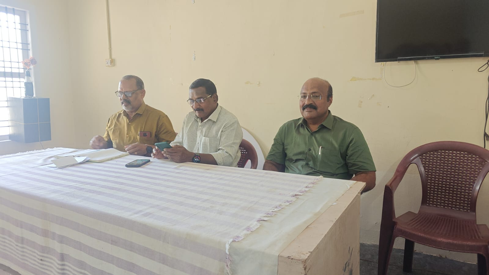
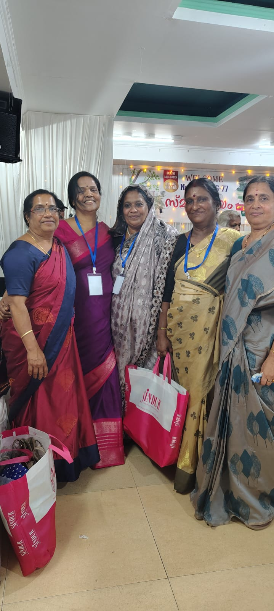
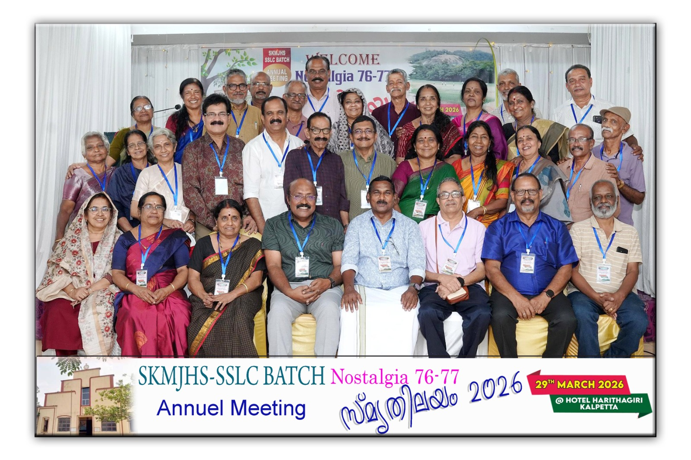
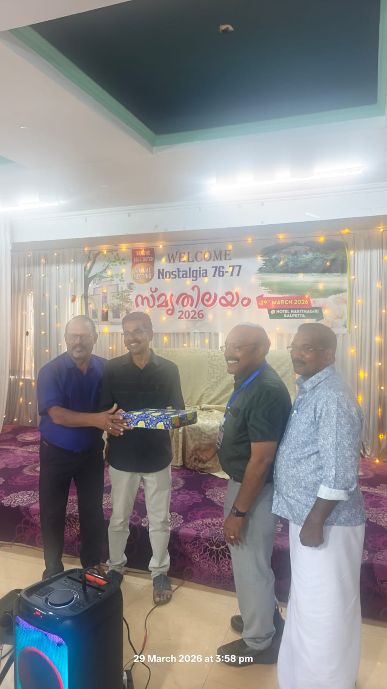
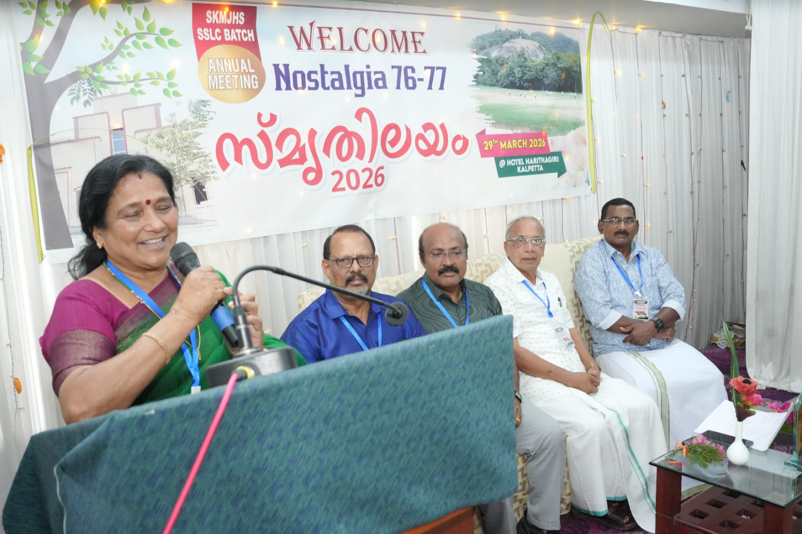
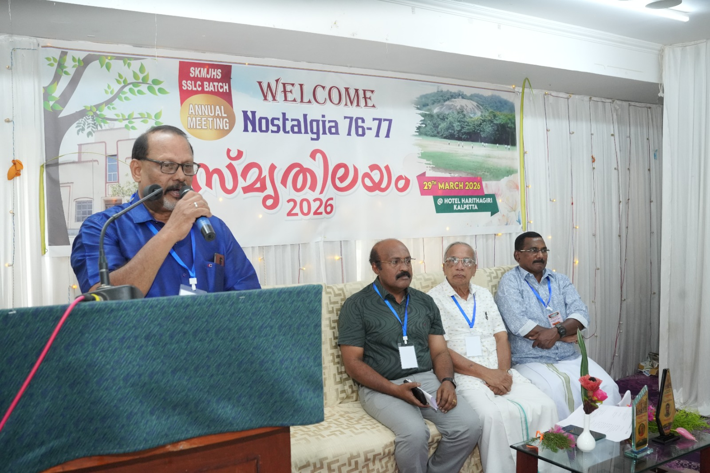

"Connecting together for friendship, social service, and shared joy among all members, without bias or distinction."
"എല്ലാ അംഗങ്ങളെയും വലുതോ ചെറുതോ എന്ന വ്യത്യാസമില്ലാതെ, പക്ഷപാതമില്ലാതെ, സൗഹൃദത്തിനും സാമൂഹ്യസേവനത്തിനും പരസ്പര സന്തോഷത്തിനുമായി ഒരുമിച്ച് ബന്ധിപ്പിക്കുക."
Welcome to the official website of Nostalgia 76-77. This platform is an extension of our vibrant WhatsApp group, created to keep our childhood friendships alive. Our core focus is on unity, social service, and sharing moments of joy. We wish to stay connected, support one another in times of need, and cherish the golden memories of our school days.
നോസ്റ്റാൾജിയ 76-77 ബാച്ചിന്റെ ഔദ്യോഗിക വെബ്സൈറ്റിലേക്ക് സ്വാഗതം. നമ്മുടെ സജീവമായ വാട്ട്സ്ആപ്പ് കൂട്ടായ്മയുടെ തുടർച്ചയായാണ് ഈ വേദി ഒരുക്കിയിരിക്കുന്നത്. സൗഹൃദം, ഐക്യം, സാമൂഹ്യസേവനം, സന്തോഷങ്ങൾ പങ്കിടൽ എന്നിവയാണ് നമ്മുടെ പ്രധാന ലക്ഷ്യങ്ങൾ. പരസ്പരം താങ്ങായി നിൽക്കാനും സ്കൂൾ കാലത്തെ സുവർണ്ണ ഓർമ്മകൾ കാത്തുസൂക്ഷിക്കാനും ഈ കൂട്ടായ്മ നമ്മെ സഹായിക്കും.
President: R Rajan | Secretary: Joseph | Treasurer: Thankachan

Please click the button below to view the directory on your mobile device.
Decisions on Guruvandanam, one-day tour, charitable activities, and future plans.
📄 Download PDF



